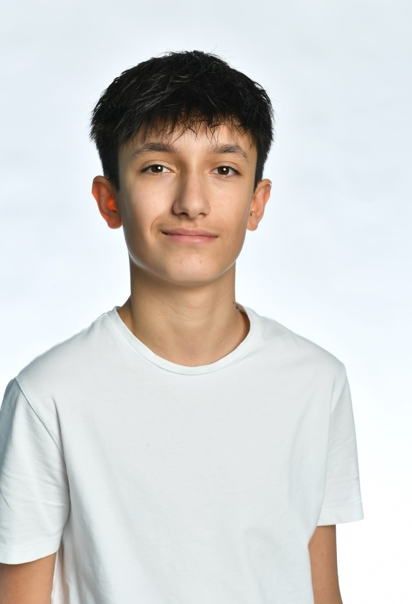

|
Name: Rastoder Vorname: Rayan Adresse: Im Gerbeacker 6, 3063 Ittigen Telefon: 076 266 26 78 E-Mail: rayan.rastoder@gmail.com Geburtsdatum: 13.Juli 2009 Eltern: Sabir Rastoder und Merima Rastoder Geschwister: Sarina Rastoder Nationalität: Schweiz |
 |
2022 - 2025: 3 Jahre Sekundarschule, OSZ Ittigen
2016 - 2022: 6 Jahre Primarschule, Rain Ittigen
Deutsch: Muttersprache
Französisch: Schulkenntnisse (ab 3. Schuljahr)
English: Schulkenntnisse (ab 5. Schuljahr)
Februar 2023: Informatiker, PostFinance
März 2024: Informatiker, PostFinance (Reacall)
Dezember 2023: Informatiker, Bbc
April 2024: Informatiker, Die Mobiliar
- Programmieren
- Digitale Mediengestaltung
- Fussball
- Sport
Sibylle Matter, (Klassenlehrperson)
Telefon: 078 771 94 91
E-Mail:sibylle.matter@ittigen.ch
Luca Borrer, (Ehemalige Klassenlehrperson)
Telefon: 078 710 71 59
E-Mail: luca.borrer@hotmail.com